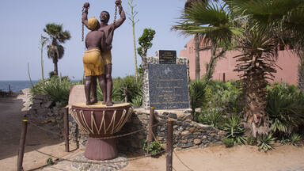
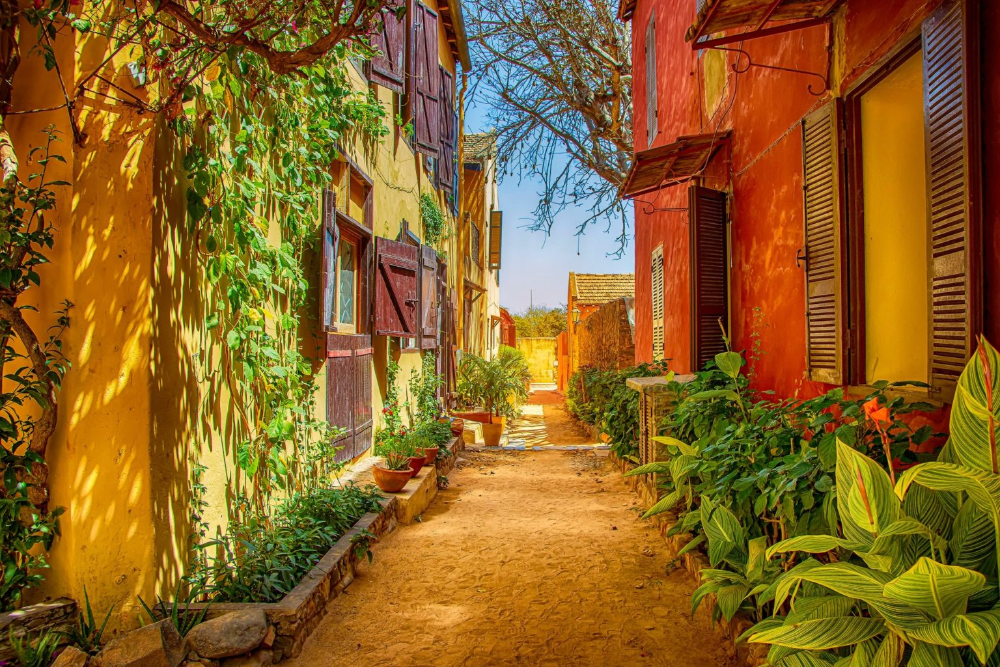
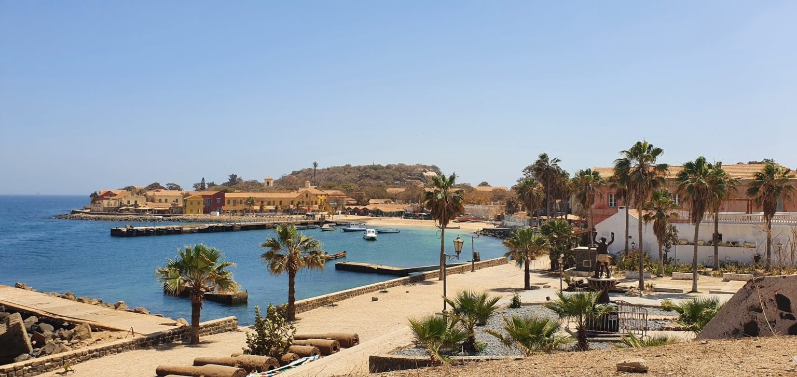
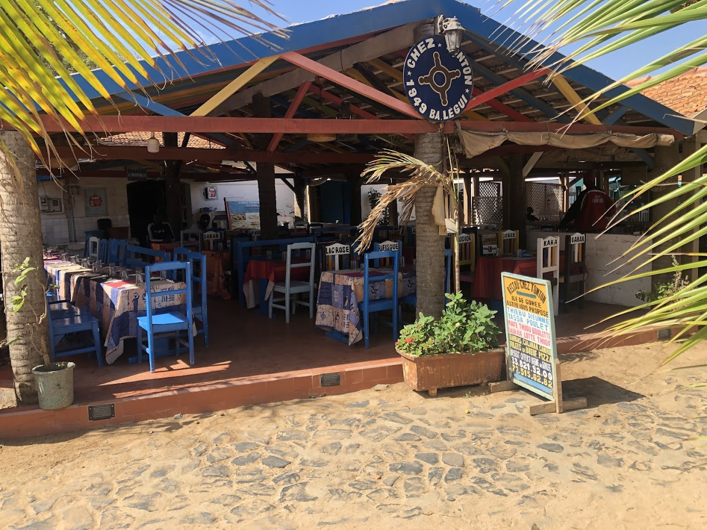

L’Île de Gorée témoigne d’une expérience humaine sans précédent dans l’histoire des peuples. En effet, cette « île mémoire » est pour la conscience universelle le symbole de la traite négrière avec son cortège de souffrance, de larmes et de mort.
Visiter la maison des esclaves:
S’il y a un endroit que vous devez absolument visiter lors de votre venue sur l’île, c’est la maison des esclaves. La maison se situe dans la rue Saint-Germain à l’est de l’île.
La maison des esclaves est un symbole fort de la traite négrière puisqu’elle était la dernière esclaverie en date sur l’île.
La visite de la maison des esclaves est riche en émotion, surtout lorsque l’on passe devant les cellules où étaient entassés les esclaves dans des conditions inhumaines. Vous verrez la fameuse « Porte sans retour », qui est le symbole du départ des esclaves pour l’Amérique.
Juste à côté, on trouve la statue de la libération de l’esclavage. Cette statue emblématique symbolise l’abolition de l’esclavage.
Horaires d’ouverture : du mardi au dimanche, de 10h30 à 12h et de 15h à 18h. La maison des esclaves est fermée le lundi, prévoyez alors votre visite un autre jour.
Flâner dans les rues de l’île:L’île de Gorée est une jolie petite île au style colonial où il est agréable de se promener. En effet, l’île est totalement piétonne. L’atmosphère sur l’île est calme, ce qui change des grandes villes comme Dakar. Je vous conseille de vous rendre au plateau du Castel, le point le plus haut de l’île, pour avoir une vue imprenable sur l’île et l’océan. Si vous êtes sur l’île de Gorée, c’est également le moment de dénicher une pièce d’artisanat unique ! Il y a beaucoup d’artisans sur l’île qui confectionnent de très jolies pièces. Cela vous fera un beau souvenir et en plus, vous aiderez la population locale.
Profiter des plages de l’île de Gorée br Les plages qui se trouvent sur l’île de Gorée font partie des plus belles au Sénégal. De plus, vous pouvez vous baigner en toute sécurité, car il y a très peu de vagues. Vous trouverez plusieurs plages pour vous détendre, avec des petits snacks de plage. La plage des amoureux, bien qu’assez petite, est un petit coin de paradis sur l’île de Gorée.
Où manger sur l’île de Gorée ? br Il y a pas mal de restaurants sur l’île de Gorée, notamment près de l’endroit où arrivent les chaloupes. Voici les 4 endroits que je vous conseille si vous voulez bien manger ! ▫️ Chez Tonton : l’endroit est très convivial ainsi que le service. On y mange très bien pour des prix très raisonnables. 